Nginx 目录介绍
这里分别介绍了 Nginx 的源码目录和安装目录。
安装目录
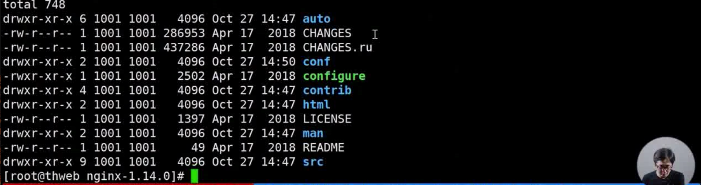
auto 目录有 4 个子目录：cc、lib、os、types。cc 目录用于编译，os 目录用于对所在操作系统判定。其它所有文件都是为了辅助confiration 脚本执行的时候去判定我们 Nginx 支持哪些模块、当前操作系统的哪些特性可以供给 Nginx 使用。
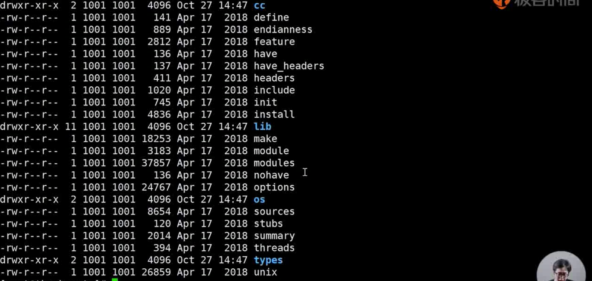
CHANNGES 文件就是 Nginx 每个版本中提供了哪些特性，有哪些bugfix。
因为作者是一个俄罗斯人，所有它也有一个俄语版的 CHANNGES.ru。
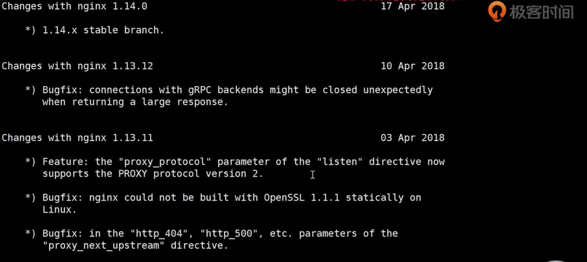
conf 目录里面存储私人文件。因为在我们安装 Nginx 后，为了方便运维去配置，会把 conf 目录里面的私人文件拷贝到安装目录。
configure 脚本用来生成中间文件，是执行编译前的一个必备工作。
contrib 目录提供了 2 个脚本和vim 工具。
比如，我们在没有使用 vim 工具打开 nginx 配置文件，会发现 Nginx 语法没有在 vim 中高亮显示。
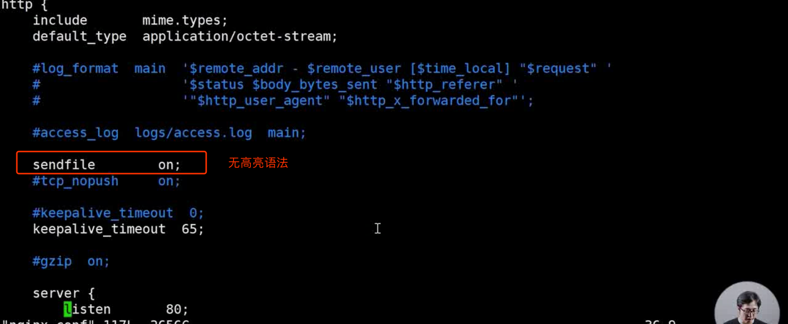
这时候我们把 vim 工具拷贝到我们自己的工作目录中，再查看配置文件，会发现已经有了 Nginx 语法高亮显示了。
1 | cp -r contrib/vim/* ~/.vim/ |
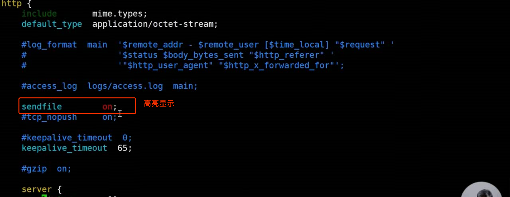
html 目录提供了 2 个标准的 html 文件，一个是发现 500 错误的时候可以重定向到这个文件，另外一个是默认的 nginx 欢迎界面。
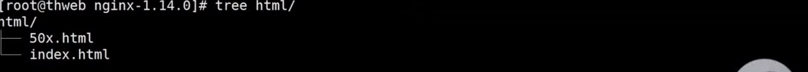
man 目录里面是 Linux 对 Nginx 的帮助文件，打开之后我们可以看到最基本的 Nginx 帮助和配置。
1 | cd man/ |
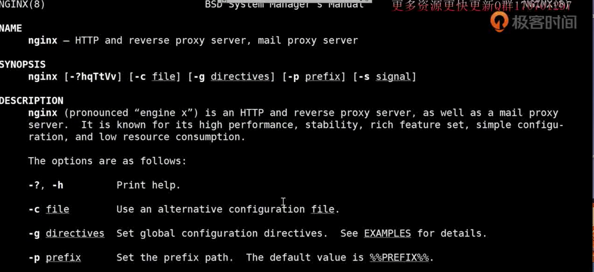
src 目录存放 Nginx 的源代码。
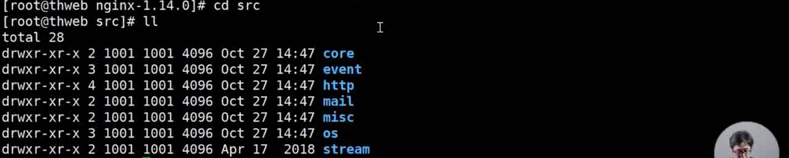
安装目录介绍
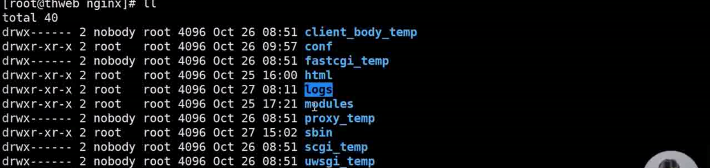
conf 目录存在着从源码目录拷贝而来的 Nginx 配置文件。
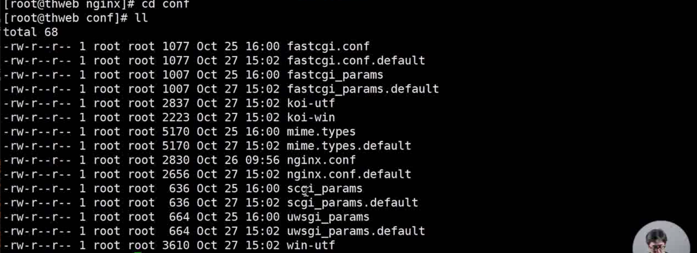
sbin 字目录存放着 Nginx 的二进制文件。
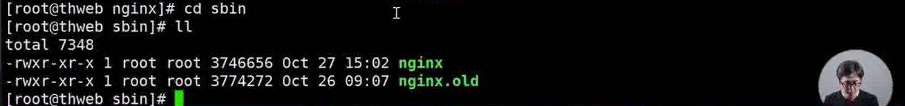